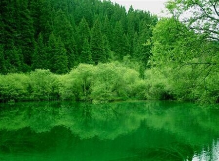
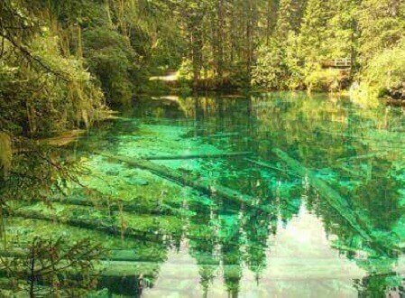
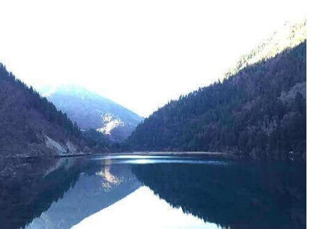

morly旅游圈
简介：
景区内山、林、洞、海等相应成辉，林木遍野，大小海子可与九寨彩池比美，钙化池瀑布可与黄龙“瑶池”争辉。主要景点有：扎嘎瀑布、牟尼森林、百亩杜鹃、翡翠温泉、百花湖、月亮湖、天鹅湖和溶洞群等。
1、防止高山反应，在高海拔地区不要做剧烈的运动，轻微的心跳加速是正常的，但如果感到心脏和肺部不适应或出现感冒症状时应当及时告知领队和向导。
2、白天温度10到20摄氏度左右，晚上0摄氏度左右，请备好衣物，以免着凉。
3、去牟尼沟旅游要注意尊重原著文化，在体验野外生存的生活方式，接触另类生活人群和他们的文化时，尊重当地的文化和传统。
4、骑马过程中不要疾驰和互相追逐以免发生危险，上下陡坡和经过危险路段时听从导游安排，下马步行。
5、爱惜马匹，马不仅仅只是坐骑，对当地人来说，马是家庭的一个成员和生活的依靠。
6、去牟尼沟旅游要注意环保，爱惜一草一木，节约使用篝火用的柴火，不砍伐幼树，塑料袋和废旧电池等一定要带出这些山区。
7、爱惜宿营和公用装备。
8、雪山之旅是浪漫的，但也是艰苦的，要特别注意安全，由于旅游目的地处在高海拔的原始森林、草甸和雪山地带，脱离队伍的危险性比常规旅游大大增加，因此在宿营、骑马、攀登等过程中务必听从安排。
旅游信息：门票：
旺季（4月1日-11月15日）100元，淡季（11月16日-次年3月31日）60元
开放时间
7:00-17:30（12月1日-次年3月31日景区封闭）
牟尼沟风景区
冬季进入牟尼沟最好的方式就是骑马，细细品味牟尼沟的美。
内容整理至网络，如有侵权，请联系我们！1255394075@qq.com
  